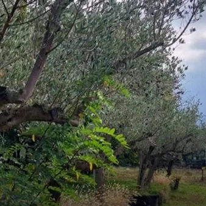

da sab 24 ott a dom 25 ott
10^ Giornata Nazionale camminata tra gli olivi
Itinerario sabato 24 ottobre Alle ore 9 ritrovo con le guide della Società Alpina delle Giulie e del WWF Area Marina Protetta di Miramare presso la Trattoria Sociale di Prosecco. Inizio della passeggiata guidata lungo il costone carsico ai piedi degli abitati di Contovello e…
 Indicazioni
Indicazioni
- Costi e prenotazioni
- Costo non indicato · Prenotazione non indicata
- Programma
- Programma da verificare. Apri la fonte ufficiale per orari e possibili aggiornamenti.
- In caso di maltempo
- Nessuna indicazione specifica pubblicata.
- Note
- Acquisito automaticamente dalla fonte.
L’EVENTO
Descrizione completa
Itinerario sabato 24 ottobre
Alle ore 9 ritrovo con le guide della Società Alpina delle Giulie e del WWF Area Marina Protetta di Miramare presso la Trattoria Sociale di Prosecco. Inizio della passeggiata guidata lungo il costone carsico ai piedi degli abitati di Contovello e Prosecco all'interno della Riserva di Biosfera UNESCO “Miramare e costiera triestina” , alla scoperta di un paesaggio caratterizzato dai suggestivi terrazzamenti coltivati a ulivo, i tipici pastini, che sono particolarmente presenti nel tratto compreso tra Contovello e San Stefano.
Intorno alle ore 12 trasferimento presso un'azienda locale dove è prevista una degustazione di oli locali e piacevole light lunch per concludere la giornata all'insegna dei sapori e delle tradizioni del Carso. Intorno alle ore 15 conclusione della giornata. Itinerario domenica 25 ottobre Alle ore 9 incontro con la guida turistica davanti al Teatro Romano , inizio del percorso verso il Colle di San Giusto . Passeggiata fino alla città vecchia con fermata all'antico frantoio di Androna dell'Olio. Proseguimento lungo le vie del Borgo Giuseppino passando per le Rive fino il Borgo Teresiano, dando rilievo all'importanza dell'olivicoltura nell'economia tergestina e alla storia dello sviluppo economico del porto di Trieste.
A seguire nella Sala Bobi Bazlen del Museo Teatrale Schmidl di via Rossini 4, si terrà un convegno con la prof.ssa Bruna Scaggiante, Cavaliere dell'Ordine al Merito della Repubblica Italiana, docente di Biologia molecolare del Dipartimento Scienze della Vita dell'Università di Trieste, coordinatrice regionale della LILT FVG e componente del Comitato Scientifico della LILT Nazionale, che parlerà dei valori della buona alimentazione e delle proprietà dell'olio EVO, ed il prof. Claudio Tiribelli, Direttore Scientifico della Fondazione Italiana Fegato – FIF ETS, realtà di eccellenza internazionale nella ricerca epatologica traslazionale, che si dedica a divulgare e promuovere stili di vita sani per la prevenzione delle malattie metaboliche.
Gli interventi saranno dedicati prevalentemente ad illustrare i valori della corretta alimentazione e alle proprietà antiossidanti dell'olio extravergine di oliva (EVO).
Intorno alle ore 13 trasferimento con pullmann presso un' azienda agricola del territorio a San Dorligo della Valle/Dolina . Alle ore 13.30 light lunch . Alle ore 15 passeggiata nell'oliveto con spiegazioni sulle modalità di coltivazione e lavorazione e cenni storico-naturalistici sulle qualità degli olivi autoctoni, alle ore 16 degustazione dell'olio EVO e brindisi finale, intorno alle ore 17 conclusione della giornata e rientro in piazza Oberdan.
Per info e prenotazioni consultare la pagina dedicata!
IL PROGRAMMA
Programma e orari
Appuntamenti raccolti dalle fonti elencate. Dove manca un orario, non è ancora disponibile in questa scheda.
Programma pubblicato
- Dal 2026-10-24 al 2026-10-25
INFORMAZIONI UTILI
Prima di partire
- Controllare la fonte prima di partire.
ORGANIZZAZIONE